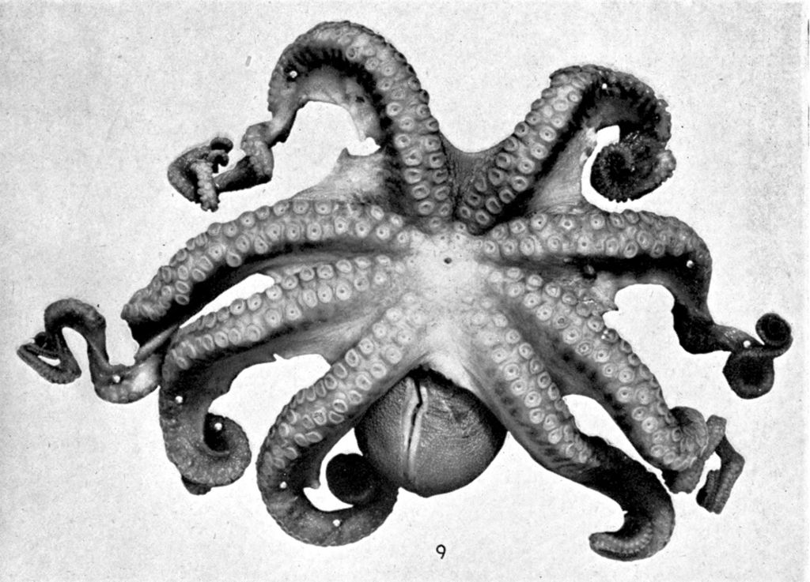
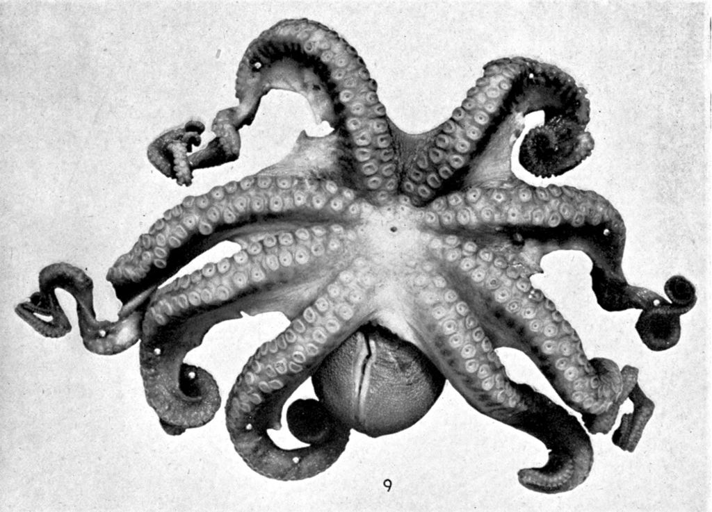

Sistema nervoso
O toque secreto no talento do polvo para a mudança de cor são os cromatóforos. Essas células pigmentadas contêm, cada uma, três bolsas de cor e dezenas de milhares delas cobrem a pele do polvo. Cada cromatóforo é cercado por músculos que mudam a forma como o pigmento é mostrado, relaxado ou contraído. Uma publicação do instituto Smithsonian compara o fenômeno a uma gota de tinta sobre uma faixa de elástico: quando a faixa está solta, a cor é concentrada em um ponto e não é prontamente visível. Mas quando a faixa é esticada, a cor se propaga [fonte: Smithsonian National Zoological Park (em inglês)].
Cada cromatóforo é independentemente controlado pelo sistema nervoso, o que permite um alto grau de complexidade na exibição de cores. O alto nível de controle pelo sistema nervoso também significa que a mudança de cor se espalha na pele num instante - um polvo pode mudar sua aparência em menos de um segundo. Células reflexivas na pele, chamadas iridóforos, acentuam ainda mais as impressionantes mudanças de cor, espelhando as cores do ambiente circundante. Projeções na pele, chamadas papilas, ajudam no disfarce, mudando texturas para se misturar mais rapidamente com substâncias como o coral ou a areia.
Além de confundir os predadores por meio da mudança de cor e de textura, o polvo tem uma arma secreta: tinta. Uma bolsa de tinta está localizada próxima ao seu sistema digestivo e, quando necessário, o polvo pode ejetar tinta para fora da bolsa junto com uma rajada de água a partir do funil. A combinação cria uma nuvem negra. O polvo pode soltar a tinta em pequenas bolhas que servem como iscas, ou pode soltá-la em uma grande massa para encobrir uma fuga rápida. Para completar, a tinta contém tirosinase, um composto que prejudica o olfato e o paladar, o que confunde ainda mais o predador.
Sistema respiratório
Por serem animais extremamente ativos que podem se deslocar com grande velocidade, os polvos – e também as lulas – desenvolveram um sistema circulatório com três corações, diferente de todos os outros animais. Eles têm um coração principal – o coração sistêmico – que recebe o sangue oxigenado das brânquias e o bombeia para todo o corpo do animal; e têm ainda dois corações acessórios – os corações branquiais – que recebem o sangue sem oxigênio e bombeiam para as brânquias, para receberem mais oxigênio. Com mais oxigênio no corpo, podem ser assim: superativos!
Reprodução
Uma vez que o polvo atinja a idade adulta, ele terá, naturalmente, a ânsia pelo acasalamento. Como acontece com a maioria das criaturas, o propósito principal do polvo na vida é reproduzir. No entanto, se ele soubesse o que o espera logo depois do acasalamento, pensaria duas vezes. Tanto o macho quanto a fêmea morrem logo após acasalar. O macho morre poucos meses depois e a fêmea morre logo depois de chocar os ovos. Algumas espécies têm rituais de acasalamento impressionantes, mas muitos polvos parecem agir de maneira mecânica.
O polvo macho tem um tentáculo modificado chamado hectocotylus que tem cerca de um metro de comprimento e que contém fileiras de esperma. Dependendo da espécie, ele aborda uma fêmea receptiva e insere o tentáculo dentro do oviduto dela, ou retira o tentáculo e o dá à fêmea para que ela o armazene em seu manto e o use mais tarde. No último caso, a fêmea mantém o tentáculo até pôr os ovos e, nesse momento, ela tira o tentáculo e espalha o esperma sobre os ovos para fertilizá-los.
A fêmea cuida meticulosamente de seus ovos até que eles eclodam, abdicando de alimento o tempo todo. Ela facilita a passagem de correntes por entre os ovos para mantê-los limpos e os protege de predadores. Os ovos devem ser incubados entre dois e 10 meses, dependendo da espécie e da temperatura da água. Uma vez que aconteça a eclosão, eles ficam por conta própria do nascimento aos 10 milímetros
Crescimento
Um polvo jovem cresce em rápida velocidade, talvez por causa de sua curta expectativa de vida. Extremamente eficiente em transformar o alimento em massa corporal, o polvo jovem aumenta seu peso em cerca de 5% ao dia. No fim da vida, um polvo pesará 1/3 de todo o alimento que tiver ingerido. O polvo comum vive em média somente de três a cinco anos, então ele não tem muito tempo a perder.

 



{kind=link}
{kind=link}
{kind=link}
{kind=link}
{kind=link}
{kind=link}